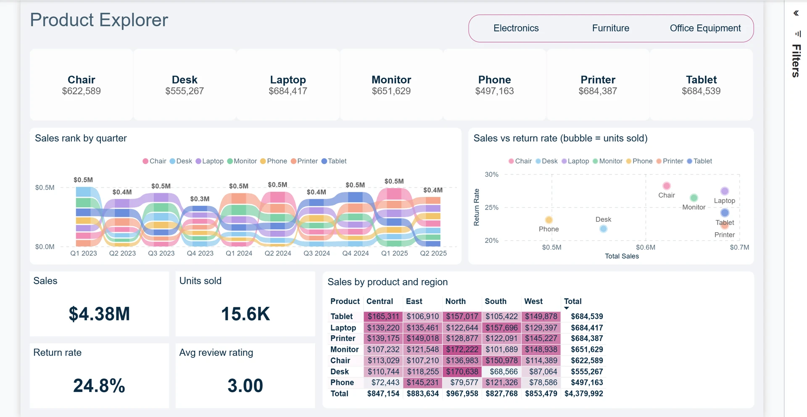
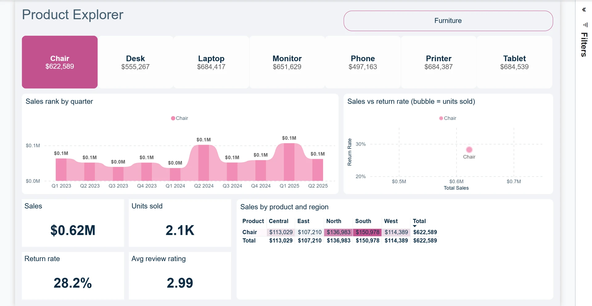

تصميم داشبورد وتقارير Power BI
أنا عمر مجدي، مطور Power BI في مصر. أساعدك في تحويل ملفات البيانات إلى لوحات تفاعلية توضّح أداء شركتك وتدعم قرارات فريقك.
تقرير تفاعلي بصفحتين لتحليل المبيعات والمنتجات والمرتجعات، مع مقارنة الأداء عبر السنوات والمناطق.

إجمالي المبيعات لا يوضح وحده أداء النشاط. يربط هذا المشروع بين المبيعات والطلبات والخصومات والمرتجعات حتى يمكن فهم اختلاف النتائج بحسب المنتج والمنطقة.
بنيت نموذجًا نجميًا من أربع جداول حقائق وأربع جداول أبعاد، مع 66 مقياس DAX منظّمًا في مجلدات. يعتمد Power Query على معامل واحد لمجلد المصدر. تضم صفحة النظرة العامة مؤشرات الأداء والاتجاه الشهري، وتتيح صفحة استكشاف المنتجات تحليلًا أكثر تفصيلًا.
يمكن الانتقال من مؤشرات المبيعات العامة إلى أداء منتج محدد، مع فلاتر السنة والفئة ومقارنات العام السابق. تشترط حسابات العام السابق تحديد سنة واحدة للحفاظ على وضوح المقارنة.
اضغط على الصورة لعرضها بالحجم الكامل. واجهة التقرير الأصلية باللغة الإنجليزية.



شاهد التقرير أثناء الاستخدام. تحميل الفيديو يتصل بموقع LinkedIn.
مشروع معرض أعمال مبني على بيانات تدريب عامة. الأرقام المعروضة توضح إمكانات التقرير ولا تمثل نتائج أعمال لعميل.
أنا عمر مجدي، مطور Power BI في مصر. أساعدك في تحويل ملفات البيانات إلى لوحات تفاعلية توضّح أداء شركتك وتدعم قرارات فريقك.
محلل بيانات مستقل في مصر لمساعدتك في إعداد استعلامات SQL، تنظيم بيانات التقارير، وبناء أساس موثوق لتحليل الأداء باستخدام Power BI.
قلّل العمل المتكرر في إعداد التقارير من خلال خطوات واضحة تناسب ملفات Excel ومصادر البيانات ودورة العمل في شركتك.
أرسل هدف المشروع ومصادر البيانات والموعد المطلوب. أنا في القاهرة وأعمل عن بُعد مع عملاء داخل مصر وخارجها.
omarmagdy99860@gmail.com